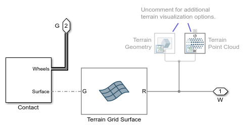

Generating Grid Surface from STL Geometry: Terrain
This example shows MATLAB commands to generate the scattered grid data used to model a surface using the Grid Surface block. The surface can be used with the Spatial Contact Force block to model objects colliding with or driving over uneven terrain.
The function used within the example is stl_to_gridsurface.m:
mars_terrain_grid = stl_to_gridsurface('mars_terrain.stl',100,100,'n');
Return to main example mars_rover_terrain
Copyright 2021-2024 The MathWorks, Inc
Contents
Read in the STL file, Plot Mesh
The stlread and trimesh commands are very useful for working with STL files.
The mesh below was obtained from TouchTerrain
figure(1); terrain_stl_data = stlread('mars_terrain.stl'); terrain_stl_points = terrain_stl_data.Points; trimesh(terrain_stl_data,'DisplayName',... ['STL: ' num2str(size(terrain_stl_data.Points,1)) ' Points']) box on title('STL Mesh (axis not equal to exaggerate height)') legend('Location','Best')

Obtain Data for Interpolation
The STL file has too many points for our application. We can use interpolation to create a set of data with fewer points. These MATLAB commands isolate the x, y, and z points for the upper surface, and use the command scatteredInterpolant to create a function for performing the 2D interpolation.
% Remove repeated XY points (assumes same x-y locations used on upper and % lower surface). [~ ,uniqueInd] = unique(terrain_stl_points(:,[1 2]),'Rows','stable'); terrain_points_new = terrain_stl_points(uniqueInd,:); % Separate into x, y, and z variables x = terrain_points_new(:,1); y = terrain_points_new(:,2); z = terrain_points_new(:,3); % Create an interpolant that fits a surface of the form z = F(x,y) F = scatteredInterpolant(x,y,z);
Perform Interpolation
The grid must be defined by an x vector, a y vector, and a z matrix (2D). The x- and y- vectors defining the points do not need to be evenly spaced. Using the interpolant created above, we obtain the heights at the x- and y- locations from our chosen vectors.
% Create grid vectors with desired spacing for grid surface grid_surface.xg = linspace(min(x), max(x), 50); % x-grid vector grid_surface.yg = linspace(min(y), max(y), 50); % y-grid vector % Using this syntax to conserve memory when querying a large grid of points. grid_surface.z_heights = F({grid_surface.xg,grid_surface.yg}); % Plot the resulting grid figure(2); temp_colororder = get(gca,'defaultAxesColorOrder'); terrain_stl_points = stlread('mars_terrain.stl'); trimesh(terrain_stl_points,'DisplayName',... ['STL: ' num2str(size(terrain_stl_points.Points,1)) ' Points']) hold on mesh(grid_surface.xg,grid_surface.yg,grid_surface.z_heights',... 'LineWidth',2,'EdgeColor',temp_colororder(2,:),... 'FaceAlpha',0.2,... 'DisplayName',['Grid: ' num2str(numel(grid_surface.z_heights)) ' Points']); box on title('Grid Surface from STL (axis not equal to exaggerate height)') legend('Location','Best')
Use Grid Data in Simscape Model
The grid data (x vector, y vector, z matrix) can be used to define terrain in Simscape Multibody models. In the rover model, this data is entered into the Grid Surface block.
load_system('mars_rover_terrain'); open_system('mars_rover_terrain/Rover/Terrain')
bdclose('mars_rover_terrain') close all